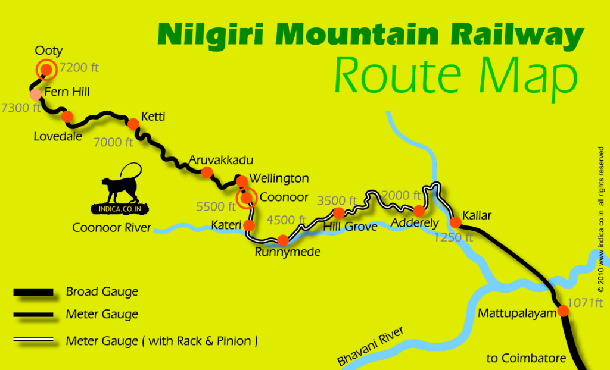

The Toy Train, covering a distance of total 46 km in a span of 5 hours, takes one through a truly spectacular journey filled with picturesque views en route.The Toy Train, also known as Nilgiri Mountain Railway Toy Train, is the key attraction of the popular hill station Ooty. Started in the year 1899, even more than a century later, it has continued to charms its visitors with equal zest winding its way through the best of nature. Weaving amidst the forests, dark snaking tunnels, sharp bends, up and down the slope, amid the mist and fog, birds and trees dancing along, whistling, passing through the stunning gorge, sunlight dancing above and dream-like drizzling, the Toy Train is an experience of a lifetime.Apart from offering a beautiful journey, the uniqueness of the trip lies in the fact that the rail system is the steepest in Asia and worth a visit.
It runs from Metupalaiyam to Udagamandalam (Ooty), via Coonoor, in the Nilgiri Hills. The track is 46 kilometers (28.5 miles) long, and passes over 250 bridges (including 32 major ones) and through 16 tunnels. This railway is particularly picturesque because of the surrounding rocky terrain, ravines, tea plantations, and forested hills. Coonoor, with its world famous teas, is a tourist destination in itself.
To reach your destination and getting around in Ooty is quite easy with the help of local transportation system. You can easily hire a taxi, tourist cab or auto-rickshaw from almost anywhere in the city.Although the city of Ooty enjoys amazing weather conditions throughout the year, however, the train services can be disrupted owing to the rainfall during monsoon season.
One toy train operates along the Nilgiri Mountain Railway from Metupalaiyam to Ooty. The engine is an 'X' Class steam locomotive, made in Switzerland. It pulls quaint blue and cream wooden carriages with large windows. The engine is changed for a more powerful diesel one at Coonoor, to provide greater traction for the steep climb up to Ooty.Both first class and second class seating are offered on the toy train, and it's worth buying a first class ticket to have a more peaceful and less cramped journey away from the crowds. It's also possible to get unreserved tickets at the counters if you arrive early enough.The most spectacular scenery and best views are situated along the stretch from Metupalaiyam to Coonoor.Hence, some people prefer to only travel along this stretch.